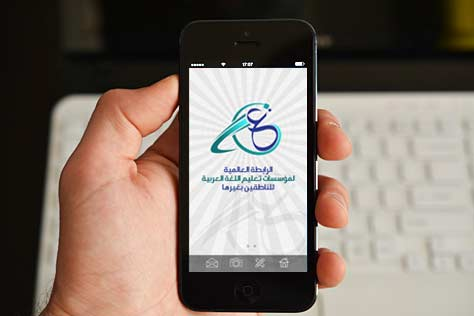

<div class="pages">
  <!--<div data-page="projects" class="page no-toolbar no-navbar">-->
    <div data-page="projects" class="page no-navbar">
    <div class="page-content">
    
     <div class="navbarpages">
       <div class="navbar_home_link"><a href="index.html"></a></div>
       <div class="navbar_page_center">خططنا</div>
       <div class="menu_open_icon_white"><a href="#" data-panel="left" class="open-panel"></a></div>
     </div>
     <div id="pages_maincontent">
      
          <h2 class="page_subtitle">خطة عام 2018</h2>
          
              <div class="page_single">
              
          
          
              <div class="clear"></div> 
        
          
              <p>
              تنفيذاً لتوصيات المؤتمرين من المشاركين والباحثين والمؤسسات العلمية والجامعات الذين حضروا المؤتمر السنوي الحادي عشر لمعهد ابن سيناء للعلوم الإنسانية والاجتماعية بعنوان (تعليم اللغة العربية للناطقين بغيرها في الوسائط الإلكترونية)الذي عقد في مدينة ليل في فرنسا، المنعقد يومي السبت والأحد  10-11 شعبان 1438 الموافق لـ 6- 7 مايو 2017م, فقد تم الاعلان عن (تأسيس الرابطة العالمية لتعليم اللغة العربية للناطقين بغيرها) وذلك بهدف تنسيق جهود المؤسسات والمراكز والمعاهد المعنية باللغة العربية للناطقين بغيرها في العالم تحت مظلة واحدة، للارتقاء بأدائها، وتعزيز التعاون وتحقيق التكامل بينها، والإسهام في نشر اللغة العربية والارتقاء بها.
              </p>
             
             <a href="http://saray-bh.com/isesco/uploads/posts/bc446b5b16ad16a52eab559cfaa418fe.pdf" target="_blank" class="download">
				    <i class="fa fa-file-pdf-o"></i> <span>تحميل الملف</span>
				</a>
             
             
              </div>
      
      </div>
      
      
    </div>
    
    
    
    
    
    
    
  </div>
</div>


        
    
    